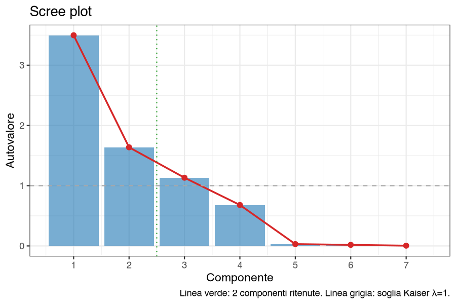
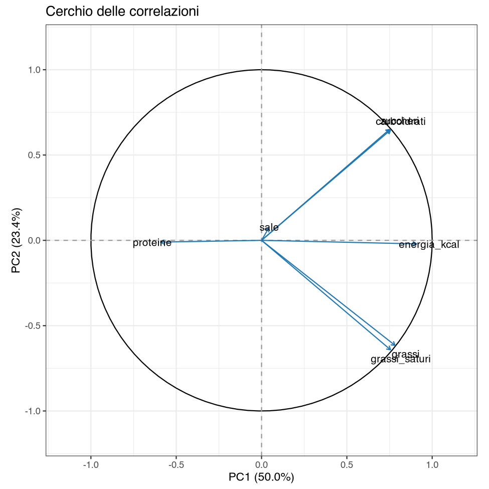
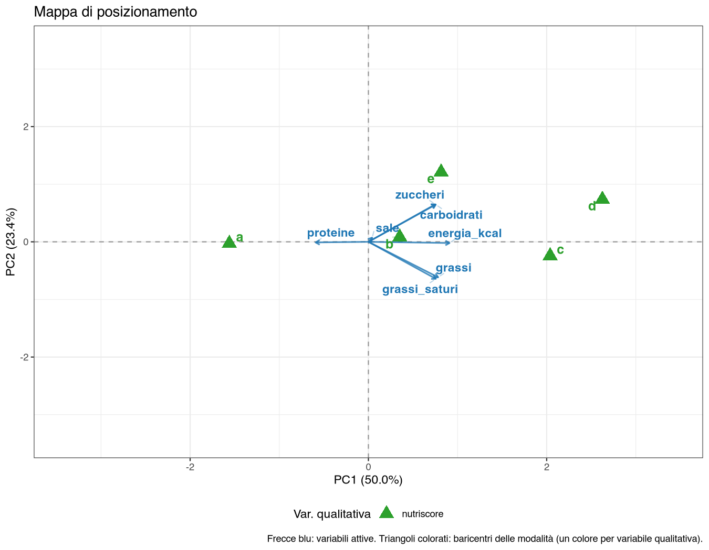
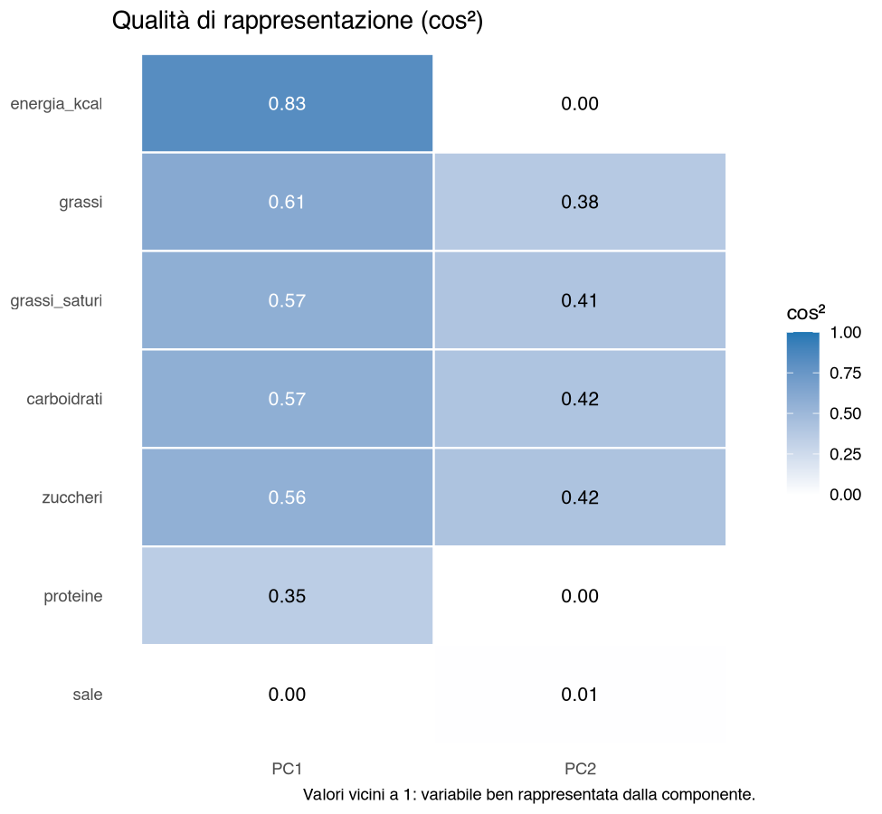

38 Caso reale — Il posizionamento nutrizionale degli yogurt
38.1 La situazione
Un’azienda lattiero-casearia vuole capire com’è occupato lo scaffale dello yogurt in Italia: non per percezioni dichiarate dai consumatori, ma per caratteristiche oggettive del prodotto, quelle stampate sulla confezione. Sono i dati che qualunque concorrente può leggere e che determinano, fra l’altro, il semaforo nutrizionale in etichetta.
La fonte è Open Food Facts, una banca dati collaborativa: i valori sono inseriti dagli utenti a partire dalle confezioni. È il suo pregio — copre marche vere, comprese le private label della distribuzione — ed è anche il suo problema.
38.2 Passo 1 — Prima dell’analisi, i controlli
L’estratto contiene 276 prodotti con marca, nome e tutti e sette i valori nutrizionali. Prima di lanciare qualunque analisi vanno fatti quattro controlli, e tutti e quattro trovano qualcosa.
| Controllo | Esito |
|---|---|
| Prodotti duplicati (stessa marca, stesso nome) | 6 |
| Energia incoerente con i macronutrienti (scostamento > 30%) | 11 |
| Zuccheri dichiarati superiori ai carboidrati | 1 |
| Prodotti con marca generica «Yogurt» | 26 |
Il secondo controllo merita una spiegazione, perché è quello che nessuno pensa di fare. Le calorie non sono una misura indipendente: derivano dai macronutrienti secondo i coefficienti di Atwater, circa 4 kcal per grammo di carboidrati e di proteine e 9 per grammo di grassi. Ricalcolare l’energia dai macro e confrontarla con quella dichiarata è una verifica che costa una formula in Dati → Calcola:
ABS(4*carboidrati + 4*proteine + 9*grassi - energia_kcal) / energia_kcalUndici prodotti scostano di oltre il 30%, due di oltre il 50%: uno yogurt greco di capra dichiara 33 kcal per 100 g quando i suoi macronutrienti ne implicano 68, più del doppio. Il controllo segnala anomalie, non errori certi: la formula trascura alcune componenti che il regolamento dell’Unione europea (UE) 1169/2011 conta a parte (fibre, polioli, acidi organici), ma in uno yogurt ce ne sono troppo poche per spiegare scarti di questa misura. Dai dati non si capisce se sia sbagliata l’energia o uno dei macronutrienti: sono valori da verificare sull’etichetta, e finché non sono verificati restano fuori, perché su una PCA standardizzata basterebbero a spostare un asse.
C’è poi un problema che non è un errore ma un fastidio: la stessa marca compare scritta in due modi, Müller e Muller, e divisa in due conta 19 e 10 prodotti invece di 29. Va unificata, altrimenti qualunque analisi per marca è sbagliata.
Tolti duplicati, incoerenze e prodotti senza una marca vera, e unificato Müller, restano 232 prodotti; escludendo i due con Nutri-Score non applicabile si arriva ai 230 su cui si lavora. Quest’ultima esclusione non era indispensabile: il Nutri-Score entra solo come variabile supplementare, e con 232 prodotti la PCA resta di fatto la stessa (73,3% invece di 73,4% sul piano). Nel file però quei due prodotti hanno il testo not-applicable, che sulla mappa comparirebbe come una sesta classe.
| Marca | Prodotti |
|---|---|
| Müller | 27 |
| Fage | 17 |
| Danone | 13 |
| Eurospin | 11 |
| Conad | 9 |
| Land | 9 |
| Milbona | 9 |
Si parte da 276 righe e se ne analizzano 230: il 17% dei dati è stato scartato prima di cominciare. In un caso didattico questo passaggio non esiste; in un caso reale è quello che distingue un’analisi da un esercizio. E va documentato riga per riga nel report, perché ogni esclusione è una decisione che qualcun altro potrebbe prendere diversamente.
38.3 Passo 2 — La PCA
Menu: Analisi → AnalisiMercato → PCA → Analisi delle Componenti Principali
Sette variabili attive (energia, grassi, grassi saturi, carboidrati, zuccheri, proteine, sale), standardizzate, due componenti. Come identificativo prodotto da solo non basta: il nome non contiene la marca, e più marche vendono uno «Yogurt greco bianco». Conviene preparare nel foglio di calcolo, prima di importare il file, una colonna etichetta che unisca marca e nome (per esempio =B2&" "&C2): è l’identificativo usato negli esempi più avanti.
Autovalori e varianza spiegata
| Componente | Autovalore | % varianza | % cumulata |
|---|---|---|---|
| PC1 | 3,497 | 49,96 | 49,96 |
| PC2 | 1,637 | 23,39 | 73,35 |
| PC3 | 1,133 | 16,18 | 89,53 |
| PC4 | 0,680 | 9,72 | 99,25 |
| PC5 | 0,030 | 0,44 | 99,68 |
| PC6 | 0,018 | 0,25 | 99,94 |
| PC7 | 0,004 | 0,06 | 100,00 |

Due componenti tengono il 73,4%. Da notare il crollo dopo PC4 (PC1, PC2, … indicano la prima, la seconda… componente principale): le ultime tre componenti valgono insieme lo 0,8%, ed è la firma di dipendenze quasi esatte fra le variabili — che infatti ci sono: la relazione di Atwater fra energia e macronutrienti, e le coppie quasi coincidenti grassi/grassi saturi e carboidrati/zuccheri (r = 0,98 in entrambi i casi).
Coordinate delle variabili (loadings) e Contributi delle variabili (%)
| Variabile | PC1 | PC2 | ctr PC1 | ctr PC2 |
|---|---|---|---|---|
| energia_kcal | 0,909 | −0,021 | 23,65 | 0,03 |
| grassi | 0,782 | −0,616 | 17,51 | 23,14 |
| grassi_saturi | 0,756 | −0,642 | 16,35 | 25,13 |
| carboidrati | 0,756 | 0,647 | 16,33 | 25,54 |
| zuccheri | 0,750 | 0,650 | 16,08 | 25,83 |
| proteine | −0,592 | −0,010 | 10,03 | 0,01 |
| sale | 0,042 | 0,073 | 0,05 | 0,32 |

PC1 (50,0%) è la densità calorica. Energia, grassi, carboidrati e zuccheri crescono insieme; le proteine vanno nella direzione opposta. A destra gli yogurt calorici, a sinistra quelli magri e proteici.
PC2 (23,4%) dice da dove vengono le calorie. Grassi e grassi saturi da un lato (\(-0{,}62\) e \(-0{,}64\)), carboidrati e zuccheri dall’altro (\(+0{,}65\)): quattro variabili che pesano insieme il 99,6% dell’asse. Due yogurt con le stesse calorie stanno agli antipodi di PC2 se uno le prende dal grasso e l’altro dallo zucchero.
E il sale non sta su questo piano. Contributo dello 0,05% su PC1 e dello 0,32% su PC2, coseno quadrato (cos²) 0,002 e 0,005: sul piano non è rappresentato affatto. Non è un difetto dell’analisi, ma non vuol dire che il sale non distingua gli yogurt: è quasi scorrelato dagli altri nutrienti (correlazioni tutte sotto 0,2), quindi non segue né la densità calorica né l’origine delle calorie, e pesa soprattutto sulla terza componente (16,2% della varianza), che il piano non mostra. Sarebbe un errore commentarlo sul piano come se dicesse qualcosa; è invece corretto lasciarlo fra le variabili attive e dichiararlo non rappresentato sui primi due assi.
38.4 Passo 3 — La mappa, e una verifica di coerenza
Il Nutri-Score dichiarato non entra nel calcolo: entra come variabile qualitativa supplementare, e i suoi baricentri vengono proiettati sul piano già costruito.

| Nutri-Score | Prodotti | PC1 | PC2 | kcal medie | Zuccheri medi | Proteine medie |
|---|---|---|---|---|---|---|
| a | 102 | −1,56 | −0,03 | 59,9 | 4,6 | 8,4 |
| b | 57 | +0,35 | +0,08 | 80,5 | 8,3 | 6,2 |
| c | 59 | +2,04 | −0,24 | 100,1 | 10,5 | 4,2 |
| d | 5 | +2,62 | +0,74 | 106,6 | 13,9 | 3,6 |
| e | 7 | +0,82 | +1,21 | 72,9 | 11,7 | 3,1 |
I baricentri si dispongono in ordine lungo PC1, da a a d. È una verifica di coerenza, non una prova indipendente: il Nutri-Score, un punteggio nato in Francia, è calcolato in gran parte proprio sulle variabili attive dell’analisi (energia, zuccheri, grassi saturi e sale pesano contro, le proteine a favore), quindi era prevedibile che si ordinasse lungo l’asse delle calorie. Dice però che l’asse estratto dalla PCA va nella stessa direzione del criterio con cui lo yogurt viene giudicato in etichetta.
L’eccezione è istruttiva. La classe e non sta all’estrema destra ma in alto: 73 kcal medie, meno di un c, ma 11,7 g di zuccheri e solo 1,2 g di grassi. Sono prodotti poco calorici penalizzati dallo zucchero — l’angolo di mappa che PC1 da solo non avrebbe distinto e che PC2 rende visibile.
Agli estremi del piano si leggono tre posizioni di prodotto molto diverse:
- in basso a destra le creme di yogurt greco intero (Consilia, Despar, Mevgal, Koukakis: PC1 attorno a \(+3{,}3\), PC2 attorno a \(-4{,}5\)), caloriche per via dei grassi;
- all’estrema destra i mix Müller con preparazione dolce (PC1 fino a \(+6{,}3\), PC2 vicino a zero), molto calorici per grassi e zuccheri insieme;
- a sinistra i greci magri di Fage (PC1 \(-2{,}4\)), poco calorici e molto proteici.
«Yogurt greco» non è una posizione di mercato: sullo stesso piano, e con lo stesso nome in etichetta, stanno prodotti agli antipodi. È la differenza fra ciò che la confezione dichiara e ciò che il prodotto contiene, ed è esattamente il genere di cosa per cui si fa una mappa di posizionamento.
38.5 Passo 4 — Di chi non fidarsi

Il cos² medio sul piano è 0,746: tre quarti dell’informazione sulla posizione dei prodotti è visibile. Ma 17 prodotti su 230 stanno sotto 0,40, e per quelli la mappa non è una descrizione attendibile: vivono soprattutto su PC3 (16,2%, in pratica l’asse del sale e in parte delle proteine) e, per alcuni, su PC4 (9,7%), componenti che questi due assi non mostrano.
La regola pratica da portarsi dietro: su una mappa di posizionamento si commentano le posizioni dei prodotti con cos² alto, e per gli altri si dice che il piano non basta. Commentare la posizione di un prodotto con cos² 0,3 significa descrivere una proiezione, non il prodotto.
38.6 Che cosa ha aggiunto la PCA
- Ha ridotto sette misure di etichetta a due assi interpretabili: quante calorie, e da dove vengono. Nessuna coppia di colonne avrebbe dato questa seconda dimensione, che nasce dall’opposizione fra grassi e zuccheri e non da una singola variabile.
- Ha mostrato dove sta ciascuna variabile senza che nessuno dovesse deciderlo a priori: il sale è nell’analisi, e l’analisi dice che non sta sui primi due assi ma soprattutto sulla terza componente.
- Ha superato una verifica di coerenza: le classi Nutri-Score, tenute fuori dal calcolo, si ordinano lungo il primo asse.
- Ha mostrato che una categoria commerciale — «greco» — può contenere posizionamenti opposti.
E, prima di tutto questo, ha richiesto che i dati fossero guardati: 44 righe su 276 non erano utilizzabili (altre 2, con Nutri-Score non applicabile, sono state tolte per semplicità), e nessuna di esse si sarebbe segnalata da sola.
38.7 Le funzioni usate
| Passo | Analisi | Opzioni principali |
|---|---|---|
| Controllo di coerenza | Dati → Calcola (jamovi) | scostamento fra energia dichiarata e calcolata dai macro |
| Esclusione | Dati → Filtri (jamovi) | duplicati, incoerenze, marca generica |
| Unificazione delle marche | Dati → Trasforma (jamovi) | Müller / Muller |
| Ridurre | Analisi delle Componenti Principali | 7 variabili; standardizzate; 2 componenti; id etichetta (marca + nome, preparata nel foglio di calcolo) |
| Verificare la coerenza | (stessa analisi) | nutriscore come qualitativa supplementare; mappa |
| Verificare la qualità | (stessa analisi) | cos² delle osservazioni: Mostra tabella contributi/coseni² delle osservazioni, con Numero massimo di osservazioni da mostrare portato a 230 (il default ne mostra 20, quelle con il contributo medio più alto) |
38.8 Da portare nel report
- Fonte, data di estrazione e licenza dei dati (per Open Food Facts, ODbL con attribuzione).
- L’elenco dei controlli fatti e il numero di righe escluse per ciascun motivo.
- La percentuale di varianza del piano, accanto alla mappa.
- Il nome dato a ciascun asse, con loadings e contributi a sostegno.
- Le variabili che non contribuiscono, dichiarate come tali.
- I prodotti con cos² basso, esclusi dal commento.